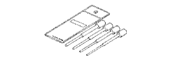
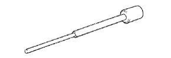
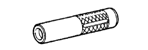
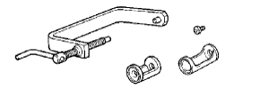
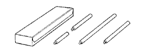
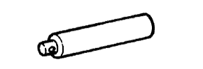
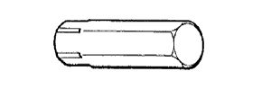
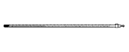

Cylinder Head Assembly (2AZ-FE) Preparation [Reassembly]
 | 09201-10000 | Valve Guide Bushing Remover & Replacer Set |
 | (09201-01050) | Valve Guide Bushing Remover & Replacer 5 |
 | 09201-41020 | Valve Stem Oil Seal Replacer |
 | 09202-70020 | Valve Spring Compressor |
| (09202-00010) | Attachment | |
 | 09950-70010 | Handle Set |
 | (09951-07100) | Handle 100 |
 | 09031-00040 | Pin Punch (φ5mm) |
| 09040-00030 | Straight Hexagon Wrench Set | |
 | (09043-30140) | Straight Hexagon Wrench14 |
| Torx Socket Wrench E5 | ||
| Torx Socket Wrench E7 | ||
| Plastic Hammer | ||
 | R-11A | Hand Reamer Usable Range 5.16 to 5.56mm Supplied by Banzai Ltd. |
| R-3A | Hand Reamer Usable Range 10.25 to 11mm Supplied by Banzai Ltd. |
| TRW-6 | T-handle Tap Holder Supplied by Banzai Ltd. | |
| FP-11A | Hand Reamer Usable Range 5.16 to 5.56mm Supplied by Iyasaka Co., Ltd. |
| FP-3A | Hand Reamer Usable Range 10.25 to 11mm Supplied by Iyasaka Co., Ltd. |
| TT-45 | T-handle Tap Holder Supplied by Iyasaka Co., Ltd. | |
 | TP-24 | Pin Vise Supplied by Banzai Ltd. and Iyasaka Co., Ltd. |
| Vernier Caliper | ||
 | DCG-30A | Dial Caliper Gauge Measuring Range: 10 to 30mm Supplied by Banzai Ltd. |
 | TMA-20 | Thermometer Supplied by Banzai Ltd. |
| TH-10A | Thermometer Supplied by Iyasaka Co., Ltd. | |
| YC-1 | Dial Caliper Gauge Measuring Range: 10 to 30mm Supplied by Iyasaka Co., Ltd. |
 | QL-100N | QL Torque Wrench (100N) Supplied by Banzai Ltd. and Iyasaka Co., Ltd. |
| QL-25N | QL Torque Wrench (25N) Supplied by Banzai Ltd. and Iyasaka Co., Ltd. |
| Toyota Genuine Engine Oil | ||
| Wooden Block |